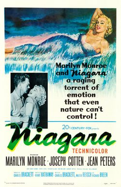

Niagara
Starring: Marilyn Monroe, Joseph Cotten, Jean Peters
Director: Henry Hathaway
Writer: Charles Brackett, Walter Reisch, Richard L. Breen
Producer: Charles Brackett
Niagara is a 1953 American noir thriller film directed by Henry Hathaway and produced by Charles Brackett. Brackett also wrote the screenplay alongside Walter Reisch and Richard Breen. Among the top-billed stars are Marilyn Monroe, Joseph Cotten, and Jean Peters. Denis O'Dea, and Max Showalter (credited as Casey Adams) are among other stars appearing in the film.
Trivia
- Walter Reisch said producer Charles Brackett wanted to make a film set around Niagara Falls and Reisch suggested it be a murder mystery.
- Reisch said, "Anybody hearing the name Niagara thinks of honeymoon couples and of some sentimental story of a girl walking out on her husband on their wedding night and their getting together again.
- I would like to make it a mystery story, with a real murder in it." Reisch said he came up with the story but wrote the script with Richard Breen and Brackett.
Previous Showings
6 Runs • 5 Festivals
Original Billings: 1 run (February 19, 1953)
Original Run: February 19, 1953 (Thursday - Tuesday)
All runs on record (6):
- February 19, 1953 (Thursday - Tuesday)Marilyn Monroe, Joseph Cotten
- October 13, 200620th Century-Fox Film Festivalw/ Leave Her to Heaven
- July 3 - 6, 2010Summer 2010w/ Gentlemen Prefer Blondes
- May 9 - 10, 2013The 1950sw/ A Kiss Before Dying
- May 9 - 10, 2018Hitchcock and Other Masters of Suspense, plus Frankenstein at 200w/ Sudden Fear
- July 24 - 26, 2026Summer 2026 including the Films of Marilyn Monroew/ Leave Her to Heaven